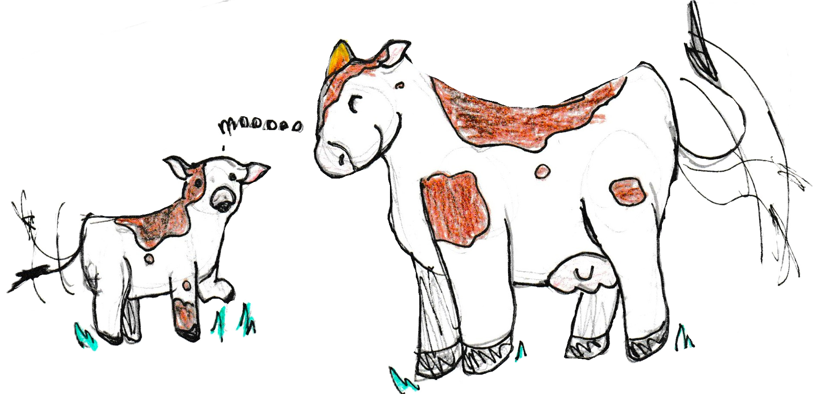
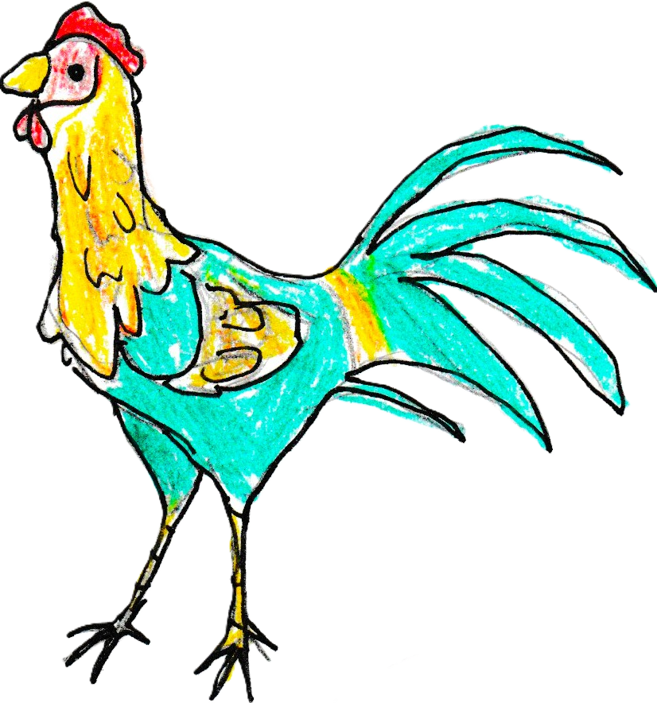
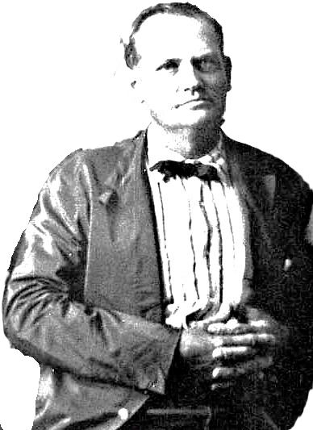

This page was last modified EST.
LINDA'S GIFT
Linda did not know what awoke her. It might have been the calves impatiently bawling to tell their mothers of their hunger.

Birdie Bronstad-Hay
Perhaps lt was the roosters crowing about the approaching day.

Birdie Bronstad-Hay
Maybe it was Father coming in the room to wake her.

He was especially jovial this morning and asked, "Linda, do you know what that noise was?"
Linda answered quickly for he had teased about that before, “Yes, that was the dawn cracking."
"Well," Father said, "Do you know what the rooster said just now?
"He said, 'Aren't you up yet?”
William Claibourne Walton
Father, with a pretense of surprise said, "Now, wouldn't that just jar your ancestors?”

James Monroe Embrey